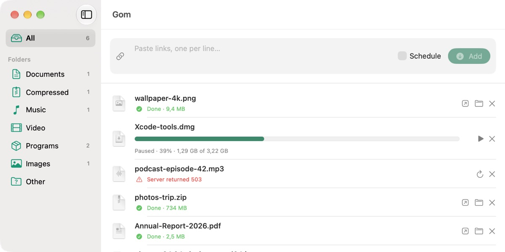

Ngo Xuan Chien
Backend Software Engineer at HDBank
I build core banking systems at HDBank: term deposits, interest calculation and End-of-Day batch jobs on Thought Machine Vault Core, with Java, Spring Boot and Kafka. Outside work I build distributed systems in Go, and native macOS apps in Swift.
Experience
-
Feb 2025 – present
Software Engineer / HDBank
Core Banking Modernization on Thought Machine Vault Core, Deposit team. I build term deposit products: the account lifecycle, interest calculation and End-of-Day batch jobs.
-
Aug – Nov 2024
Trainee / HDBank
Built a notification service that turns core banking error events from Kafka into Email and Telegram alerts, instrumented with OpenTelemetry.
-
Jun – Aug 2023
Developer Intern / DEK Technologies
Developed an Android app for voice calls, video calls and messaging over the IP Multimedia Subsystem (IMS), and set up Jenkins to run its automated tests.
Projects
E-Commerce / multi-vendor marketplace
Shopee-style marketplace: buyers check out from several shops at once, and the cart is split into one order per shop. Includes escrow payments through VNPay and Stripe, seller wallets and payouts, Vietnamese search that works with or without diacritics, and stock that never oversells under concurrent checkouts.
ZingMp3 / music streaming backend
Microservice backend for a music streaming app: API gateway, service discovery, and user, song, playlist, search and media services.
Gom / macOS download manager

Download manager with multi-connection downloads, pause/resume, scheduling and speed limits. A browser extension sends downloads to the app.
Timepaper / macOS menu-bar app
Draws your weekly timetable and calendar events onto the desktop wallpaper and keeps it updated. Event-driven, low-power, multi-monitor.
quick-split / group expense splitting
Share a link and anyone in the group can add expenses. Supports equal, exact and share-based splits, and works out the fewest transfers needed to settle up.
Skills
- Languages
- Java, Go, Swift, TypeScript, Python, C++
- Backend
- Spring Boot, Spring Cloud, Spring Modulith, gRPC, REST, Keycloak
- Data & messaging
- PostgreSQL, Redis, Kafka, Kafka Streams
- Infra
- Docker, Kubernetes, Jenkins, GitHub Actions
- Observability
- OpenTelemetry, Prometheus, Grafana, Loki, Tempo, Jaeger
- Testing
- Unit and integration tests, Testcontainers, Playwright
- Architecture
- Microservices, event-driven design, CQRS, event sourcing, transactional outbox, hexagonal
- Domain
- Core banking, term deposits, interest calculation, EOD batch processing